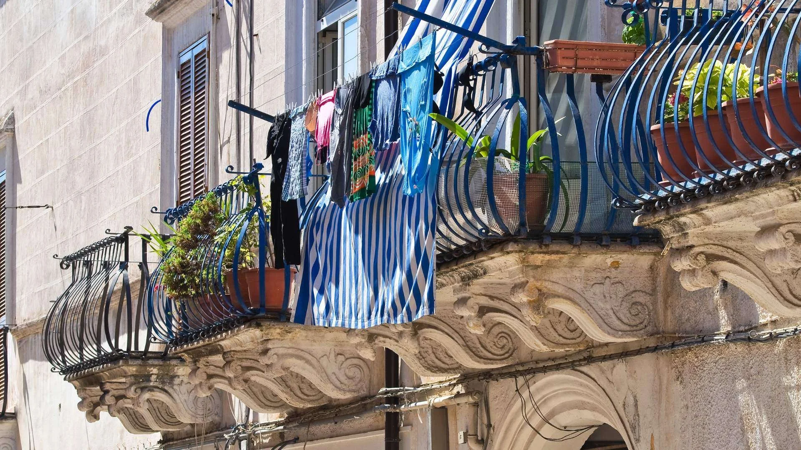

Essen & Wein
April 2026 · 7 Min. Lesezeit

Der Gargano ist bekannt für sein Meer, seine weißen Dörfer und den Umbra-Wald. Wenige wissen, dass es im Landesinneren, zwischen Manfredonia und den Dörfern der Alta Murgia, Weinberge gibt, die Weine von außerordentlichem Charakter produzieren: tiefe Rotweine wie der Nero di Troia, frische und mineralische Weißweine wie der Bombino, kleine handwerkliche Produktionen, die die Region nie verlassen und die man vor Ort suchen muss.
Dieser Artikel richtet sich an alle, die nach Manfredonia kommen, nicht nur wegen des Meeres, sondern auch um zu verstehen, was im Glas ist, wenn sie sich in einem einheimischen Restaurant setzen. Und an alle, die etwas Authentisches mit nach Hause nehmen möchten, das man in Weinhandlungen der großen Städte schlicht nicht findet.
Nero di Troia ist die bedeutendste einheimische Rebsorte der Capitanata, der Provinz Foggia, deren größte Küstenstadt Manfredonia ist. Es ist eine dunkelhäutige, spätreifende Traube mit großen Trauben, deren Beeren unter der langen apulischen Sommersonne Zucker und Polyphenole konzentrieren. Der daraus entstehende Wein hat eine fast undurchdringliche rubinrote Farbe, feste, aber nicht aggressive Tannine und ein aromatisches Profil, das von frischen Brombeeren und Pflaumen bis zu Trockenfrüchten reicht, mit Gewürz- und Tabaknoten in den gereifteren Versionen.
Es ist kein einfacher Wein im oft gemeinten Sinne: nicht rund, nicht weich, nicht darauf ausgelegt, sofort allen zu gefallen. Er braucht Essen, ein kräftiges Gericht, das seiner Struktur standhalten kann. Mit im Ofen geröstetem Lamm mit Kartoffeln, mit Fleischbomben, mit einem gereiften Caciocavallo podolico wird er zu etwas Unvergesslichem. Viele Gäste in Casa e Bottega entdecken ihn am ersten Abend beim Abendessen und verbringen den Rest ihres Aufenthalts damit, ihn in den Weinläden der Altstadt zu suchen.
Wenn Nero di Troia der Wein des Hinterlandes und des Fleisches ist, ist Bombino bianco der Wein des Meeres und des Fisches. Eine einheimische Rebsorte, die entlang der Foggianischen Küste und des südlichen Gargano angebaut wird. Sie produziert einen frischen, leichten Weißwein mit einer salinen Mineralität, die an das nahe Meer erinnert. Es ist kein komplexer Wein: ein direkter, ehrlicher Wein, der tut, was er soll, ohne das Essen zu überdecken.
Mit Spaghetti alle vongole aus dem Restaurant am Hafen von Manfredonia, mit frisch gefangenem rohem Meeresfrüchten, mit Orecchiette ai ricci di mare: Bombino bianco sollte kalt getrunken werden, um 8-10 Grad, und jung konsumiert werden. Ältere Jahrgänge fügen nichts hinzu. Es ist ein Sommerwein, fürs Mittagessen am Strand, für einen Sonnenuntergang an der Promenade mit einem Teller frittierter Fische vor sich.
Die Weinszene im Gargano und in der Capitanata besteht größtenteils aus kleinen Familienbetrieben: Weingüter mit einigen Hektar Reben, handwerklichen Kellern und selbst gemachten Etiketten. Sie haben keine Marketingbüros, nehmen nicht an großen Weinmessen teil und schicken keine Muster an Fachzeitschriften. Man findet sie durch Mundpropaganda, indem man den lokalen Restaurantbesitzer, den Weinhändler, den Wirt fragt, der das Gebiet kennt.
Einige akzeptieren Kellerbesuche auf telefonische Vereinbarung. Man sollte keine touristischen Einrichtungen mit Weinbars und strukturierten Verkostungen erwarten: Man findet den Erzeuger im Overall, Holzfässer in einer Werkstatt, Wein, der direkt aus einem Bonbonkrug in recycelte Flaschen gegossen wird. Das Erlebnis ist gerade deshalb authentisch, weil es so ist. Das sind die Weine, die das Gebiet auf direktestem Weg ins Glas bringen, ohne Vermittlung.
Die zu erkundenden Gebiete sind das Hinterland zwischen Manfredonia und Foggia, die Städte Cerignola und Orta Nova (berühmt für Nero di Troia) und die Alta Murgia garganica-Gemeinden Mattinata und Monte Sant'Angelo, wo einige Erzeuger Hanglagen-Weinberge kultivieren, deren Temperaturschwankungen ihren Weinen Säure und Frische verleihen.
Die Küche von Manfredonia und dem Gargano hat zwei verschiedene Seelen: das Meer und das Hinterland. An der Strandpromenade und in den Restaurants in der Nähe des Hafens findet man frischesten Fisch, rohes Meeresfrüchte, gegrillten Oktopus, Spaghetti mit Muscheln. Im Landesinneren verändert sich die Küche völlig: Lamm, Schwein, Käse, Hülsenfrüchte, Taralli mit nativem Olivenöl extra. Die Weine folgen dieser Aufteilung auf natürliche Weise.
Für Fischgerichte ist Bombino bianco die gebietstypischste Wahl. Als Alternative passen auch eine Falanghina vom Tavoliere oder ein kampanischer Fiano di Avellino gut. Für Fleischgerichte und Käse ist Nero di Troia fast obligatorisch: Probieren Sie ihn mit einer Scheibe mindestens 12 Monate gereiftem Caciocavallo podolico und Sie werden verstehen, warum diese Rebsorte seit Jahrhunderten in diesem Land überlebt hat.
Ein Hinweis zu Roséweinen: Apulien ist die italienische Region mit der längsten Roséwein-Tradition, und der Gargano bildet da keine Ausnahme. Ein Nero di Troia Rosé, gekühlt serviert, ist die universelle Lösung, die gleichermaßen zu Fisch- und leichten Fleischgerichten passt. Viele Restaurants in Manfredonia bieten ihn als Hauswein an.
Wer einen halben Tag damit verbringen möchte, die Weine des Hinterlandes zu erkunden, bricht von Manfredonia in Richtung Foggia auf der SS89 auf. Nach etwa 20 km beginnt die Weinbauzone: die niedrigen buschförmig erzogenen Reben, die traditionelle apulische Erziehungsmethode, die die Trauben vor der übermäßigen Hitze schützt, die vom Boden reflektiert wird. Halten Sie in den Dörfern unterwegs an und fragen Sie in einer Bar oder einem Lebensmittelgeschäft, wo man lokalen Wein kaufen kann. Man wird Ihnen den Weg zeigen.
Bei Weingütern mit organisiertem Zugang empfiehlt es sich, mindestens einige Tage im Voraus zu kontaktieren. Nicht alle haben feste Öffnungszeiten: Viele Erzeuger arbeiten morgens im Weinberg und empfangen Besucher am späten Nachmittag bei ihrer Rückkehr. Die Flexibilität der Zeiten ist einer der Vorteile, wenn man in einem privaten Ferienhaus in Manfredonia wohnt: Man kann den Tag so organisieren, wie man möchte, ohne Einschränkungen durch Check-in oder obligatorisches Frühstück.
Die Weinläden in der Altstadt von Manfredonia sind der bequemste Ausgangspunkt. Sie wählen lokale und Foggianische Erzeuger aus, oft mit einer Liste, die Flaschen enthält, die anderswo schwer zu finden sind. Man kann um eine Verkostung vor dem Kauf bitten: In den meisten Fällen öffnet der Besitzer die Flasche gerne und erklärt das Gebiet mit derselben Sorgfalt wie ein Erzeuger. Es ist die Art des kleinen Handels, der genau deshalb überlebt, weil er etwas bietet, das das Internet nicht kann.
In Restaurants sollte man nicht bei der gedruckten Weinkarte stehen bleiben: fragen Sie, was es "außerhalb der Karte" gibt, was der Restaurantbesitzer selbst trinkt, was er einem Freund empfehlen würde. In vielen Fällen kommt eine Flasche ohne Etikett, ein Wein von jemandem, den er persönlich kennt. Diese Flasche erzählt die Geschichte des Gargano besser als jeder Reiseführer.
Was sind die typischen Rebsorten des Gargano?
Die repräsentativsten Rebsorten der Gargano-Region sind Nero di Troia (ein körperreicher Rotwein, tiefe Farbe, feste Tannine), Bombino bianco (ein frischer und aromatischer Weißwein, typisch für die Foggianische Küste), Montepulciano d'Abruzzo, der auch in Nordapulien angebaut wird, und Primitivo im Hinterland. Nero di Troia ist der charakteristischste der Capitanata.
Wo kann man handwerklichen Wein in der Nähe von Manfredonia kaufen?
Die Weinläden in der Altstadt von Manfredonia wählen lokale und Foggianische Erzeuger aus, oft mit Flaschen, die anderswo schwer zu finden sind. Um direkt vom Weingut zu kaufen, sind die zu erkundenden Gebiete das Hinterland zwischen Manfredonia und Foggia sowie die Dörfer der Alta Murgia garganica. Manche Weingüter akzeptieren Besuche auf Vereinbarung.
Wozu passt Nero di Troia in der lokalen Küche?
Nero di Troia passt perfekt zu Fleischgerichten aus dem Gargano-Hinterland: im Ofen geröstetem Lamm mit Kartoffeln, Fleischbomben, Wildschweinsauce. Er harmoniert auch gut mit gereiften lokalen Käsesorten wie Caciocavallo podolico. Bei 16-18 Grad servieren, nicht gekühlt.
Ist Bombino bianco leicht zu finden?
Bombino bianco ist eine Rebsorte mit begrenzter Verbreitung, die hauptsächlich in Nordapulien und den Abruzzen angebaut wird. Im Supermarkt findet man ihn nicht, aber in Fachweinhändlungen und direkt bei Erzeugern im Raum Foggia und Gargano. Es lohnt sich, ihn zu suchen: Wer ihn probiert, betrachtet ihn oft als echte Entdeckung.
Lohnt sich eine Weintour im Gargano?
Ja, besonders im Frühjahr und Herbst, wenn die Erzeuger mehr Zeit haben, Besucher zu empfangen. Die handwerklichen Weingüter des Gargano und der Capitanata sind kleine Familienbetriebe: Sie haben nicht die touristische Infrastruktur großer Weingüter, bieten aber ein authentisches Erlebnis und viel zugänglichere Preise. Kontaktieren Sie Weingüter direkt telefonisch, bevor Sie ankommen.
Der Gargano zum Trinken und zum Erleben.
Casa e Bottega liegt in der Altstadt von Manfredonia.